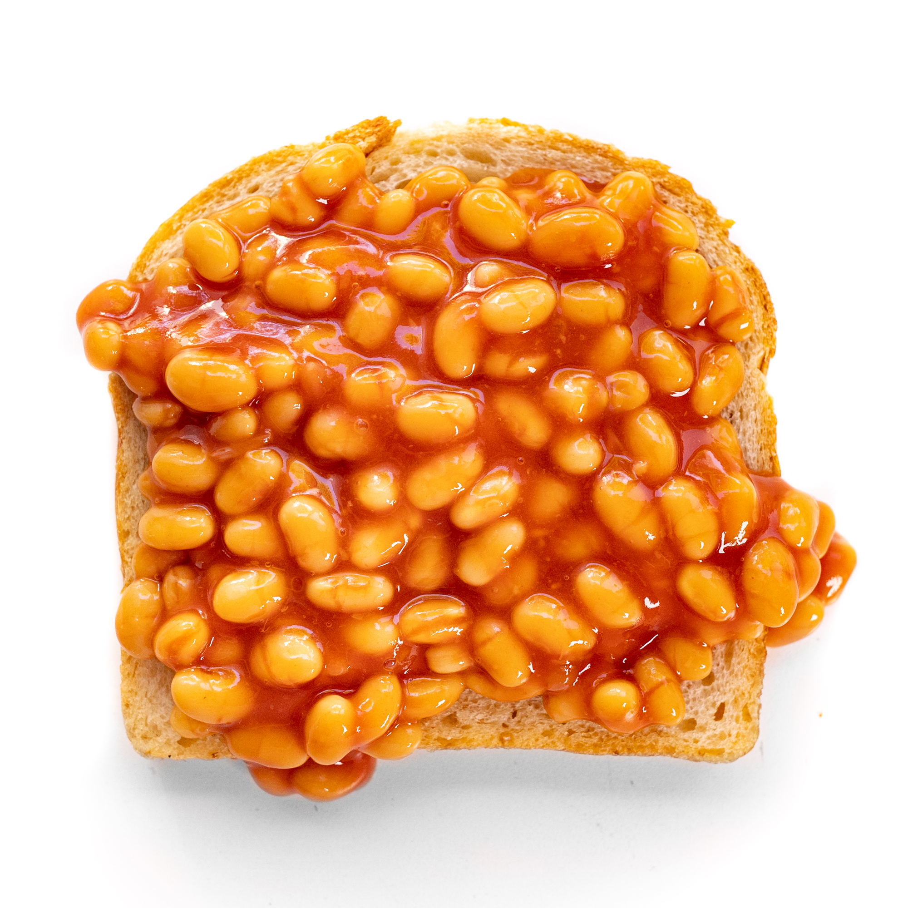

<h1>Beans on Toast</h1>

<body>
    <h1>Beans on Toast</h1>
    <p>This is a recipe for beans on toast. An aquired taste</p>
    <h1>Ingreadiants</h1>
    <ul>
        <li>Beans</li>
        <li>Toast</li>
    </ul>
    <h1>Steps</h1>
    <ol>
        <li>Toast your bread</li>
        <li>Put Toast onto a plate</li>
        <li>Pour beans onto toast</li>
    </ol>
</body>